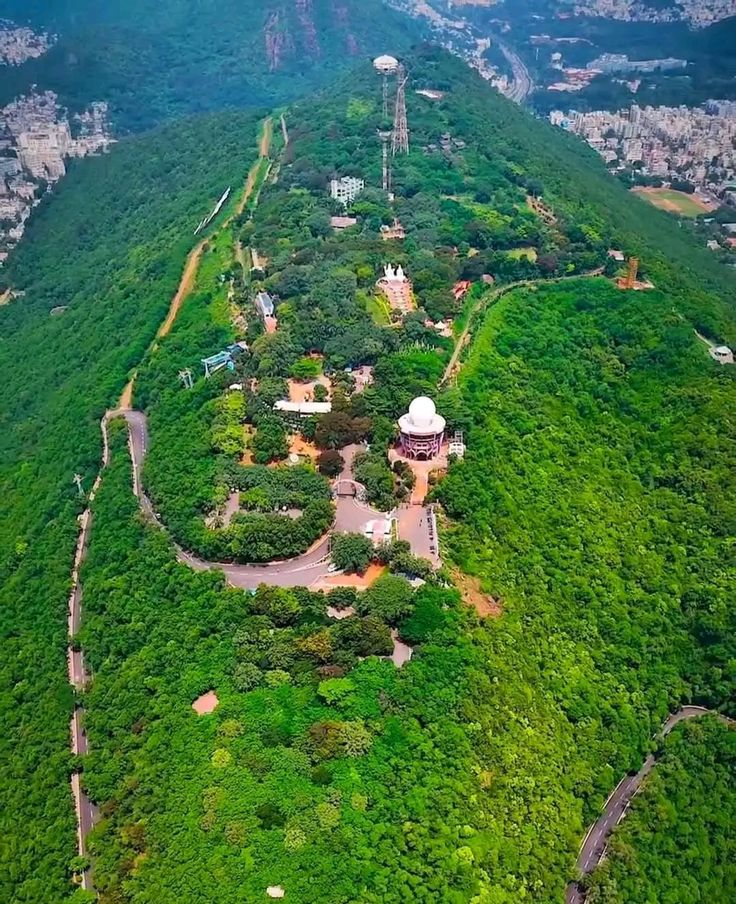

Kailasagiri Hill Park
Perched high on a hill overlooking the city and the Bay of Bengal, Kailasagiri is a famous park that offers panoramic views of the Vizag coastline. Visitors take cable cars up the hill to enjoy scenic gardens and sweeping ocean views.

Breathtaking view of the ocean shoreline looking down from Kailasagiri Hill.